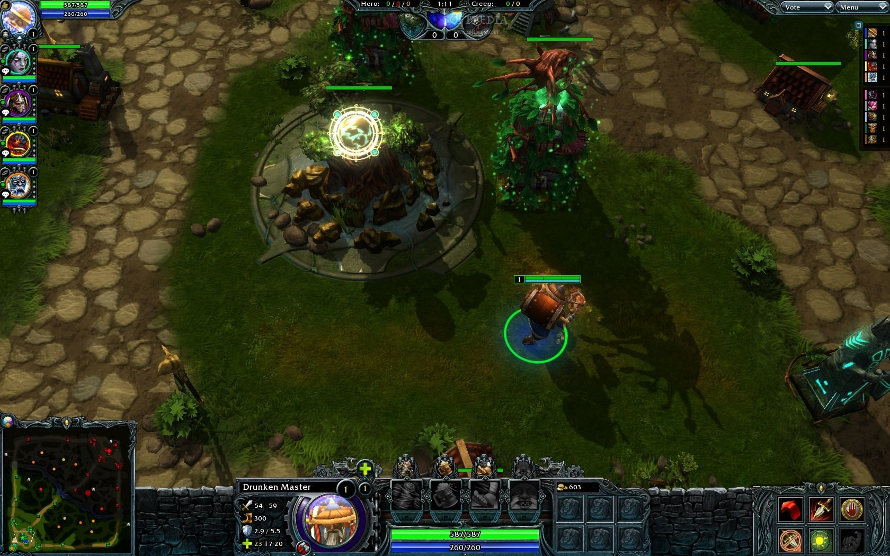
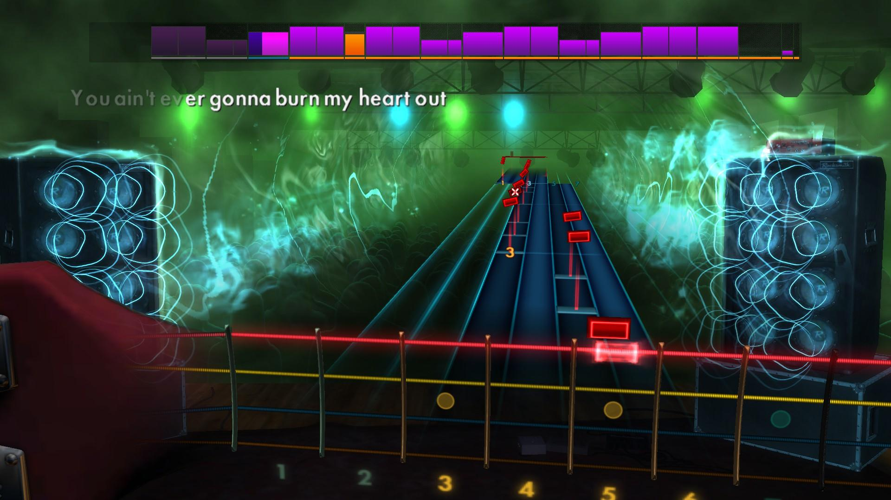
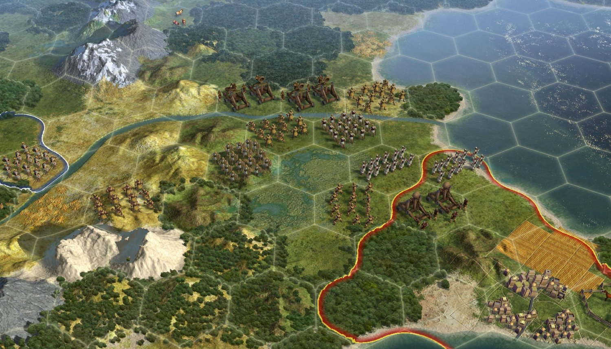
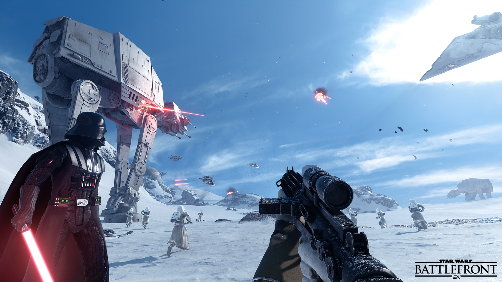
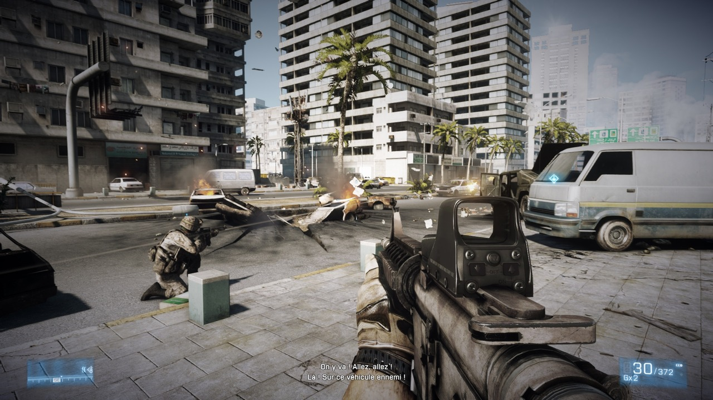
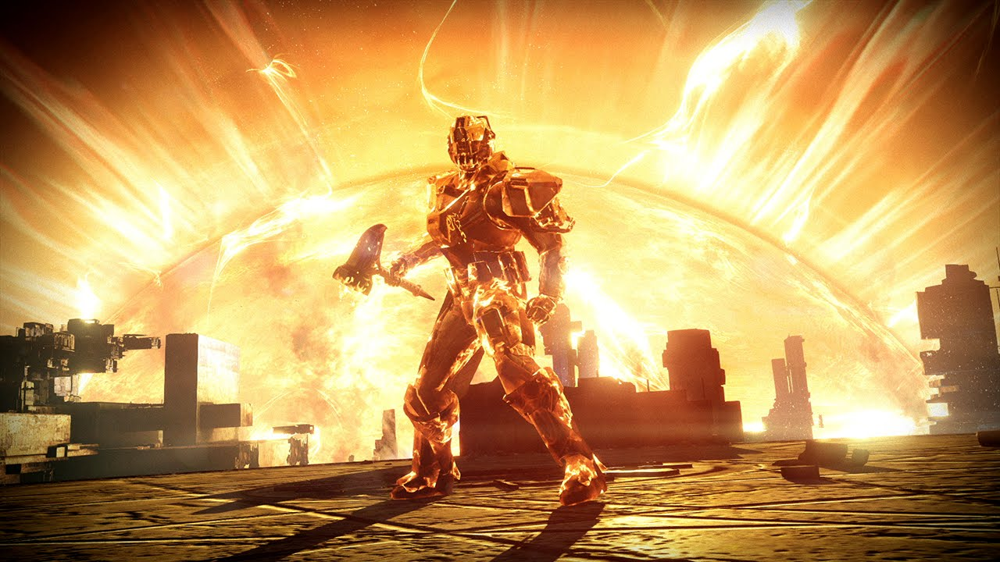
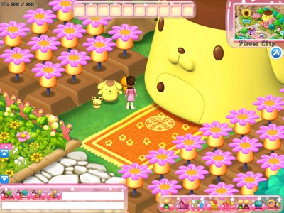
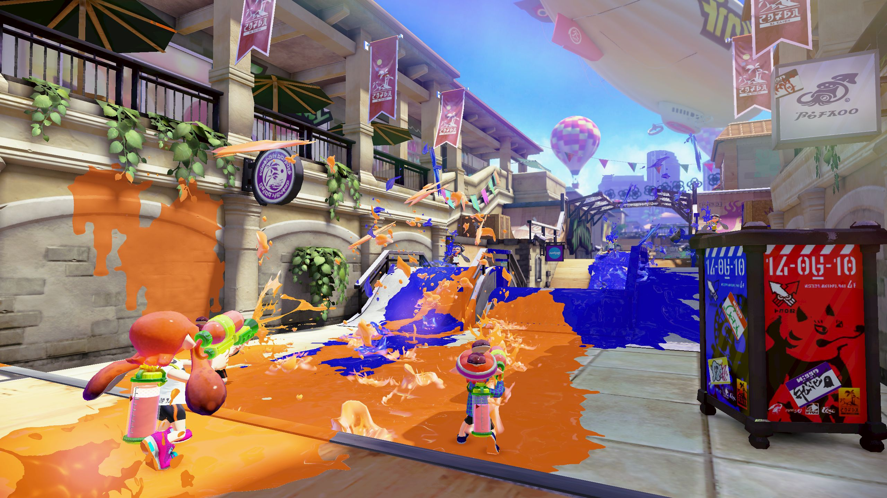
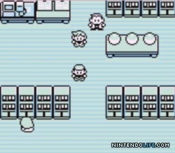

What We Play
Our most played game vs our current obsession
Evan
 
Evan has always been a big fan of Multiplayer Online Battle Arena games such as his all time favorite: Heroes of Newerth. His new guitar has prompted him to pick up Rocksmith. He dabbles in World of Warcraft, Rocketleague, and had a short love affair with Faster Than Light (FTL)
Tommy
 
Tommy has logged more hours in the Civilization franchise than any human being has any right to. His love of turn based strategy is unparalleled. Upon the release of Star Wars Battlefront, his inner nerd emerged, and we all found out exactly how much of the Star Wars lore Tommy knows. The answer is, ALL OF IT
Zach
 
Being the youngest of the Nerd Asylum group, Zach was not around for the glory days that came with the creation of the internet and the birth of the MMORPG. He is constantly disgusted at our throwbacks to games like Everquest and Daggerfall. His first game ever was Halo 2. *facepalm. He has logged the most of his gaming hours in Battlefield 3 on the Xbox 360 but his current love is Destiny.
Ben
 
Ben, being the ever reliable person that he is, did not supply us with information regarding his favorite and most played games. So we decided that his most played game is Hello Kitty Island Adventure and his current favorite is Splatoon, the new Nintendo release that reminds us all of an old Nickelodeon game show. He spends time with the group playing Heroes of Newerth, Rocketleague, and the occasional RTS.
Randy


Randy has always been a huge fan of the RPG, RTS, and Sandbox survival style game genres. His first true love was Pokemon Blue on the Gameboy. Other games would follow. Morrowind, Fallout, Everquest, Diablo, Baldur's Gate, Anything with Dungeons and Dragons, Garry's Mod, Age of Wonders, Age of Empires II, and pretty much any silly game available (Check out Broforce, best $5 you will ever spend). His most played game this week is Ark Survival Evolved, a sandbox RPG survival game pitting your character against dinosaurs (That can be tamed and saddled) and other survivors.